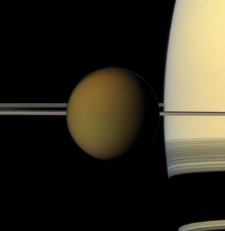

Esta ilustração mostra a sonda Dragonfly da NASA se aproximando de um local na exótica lua de Saturno, Titã. Aproveitando a atmosfera densa e a baixa gravidade de Titã, o Dragonfly explorará dezenas de locais em todo o mundo gelado, amostrando e medindo as composições dos materiais orgânicos da superfície de Titã para caracterizar a habitabilidade do ambiente de Titã e investigar a progressão da química pré-biótica. Créditos: NASA/JHU-APL
Uma nova missão da NASA para a lua gigante de Saturno, Titã , deve ser lançada em 2027. Quando chegar em meados da década de 2030, iniciará uma jornada de descoberta que pode trazer uma nova compreensão do desenvolvimento da vida no universo. Esta missão, chamada Dragonfly , levará um instrumento chamado Dragonfly Mass Spectrometer (DraMS), projetado para ajudar os cientistas a aprimorar a química no trabalho em Titã. Também pode lançar luz sobre os tipos de etapas químicas que ocorreram na Terra que levaram à formação da vida, chamada química pré-biótica.
A abundante química complexa rica em carbono de Titã, o oceano interior e a presença passada de água líquida na superfície o tornam um destino ideal para estudar processos químicos pré-bióticos e a potencial habitabilidade de um ambiente extraterrestre.
O DraMS permitirá que os cientistas na Terra estudem remotamente a composição química da superfície de Titã. “Queremos saber se o tipo de química que pode ser importante para os primeiros sistemas pré-bioquímicos na Terra está ocorrendo em Titã”, explica a Dra. Melissa Trainer do Goddard Space Flight Center da NASA, Greenbelt, Maryland.
Trainer é um cientista planetário e astrobiólogo especializado em Titã e um dos principais investigadores da missão Dragonfly. Ela também lidera o instrumento DraMS, que fará a varredura por meio de medições de amostras do material da superfície de Titã em busca de evidências de química prebiótica.
Para conseguir isso, o helicóptero robótico Dragonfly aproveitará a baixa gravidade e a atmosfera densa de Titã para voar entre diferentes pontos de interesse na superfície de Titã, espalhados por vários quilômetros de distância. Isso permite que o Dragonfly transfira todo o seu conjunto de instrumentos para um novo local quando o anterior tiver sido totalmente explorado e fornece acesso a amostras em ambientes com uma variedade de histórias geológicas.
O globo colorido da maior lua de Saturno, Titã, passa em frente ao planeta e seus anéis neste instantâneo em cores reais da sonda Cassini da NASA. Créditos: NASA/JPL-Caltech/Space Science Institute
Em cada local, amostras com menos de um grama de tamanho serão perfuradas para fora da superfície pela Perfuração para Aquisição de Orgânicos Complexos (DrACO) e trazidas para dentro do corpo principal do módulo de pouso, para um local chamado “sótão” que abriga o instrumento DraMS . Lá, eles serão irradiados por um laser de bordo ou vaporizados em um forno para serem medidos pelo DraMS. Um espectrômetro de massa é um instrumento que analisa os vários componentes químicos de uma amostra, separando-os em suas moléculas básicas e passando-os por sensores para identificação.
“O DraMS foi projetado para observar as moléculas orgânicas que podem estar presentes em Titã, sua composição e distribuição em diferentes ambientes de superfície”, diz Trainer. Moléculas orgânicas contêm carbono e são usadas por todas as formas de vida conhecidas. Eles são interessantes para entender a formação da vida porque podem ser criados por processos vivos e não vivos.
Os espectrômetros de massa determinam o que há em uma amostra ionizando o material (isto é, bombardeando-o com energia para que os átomos ali contidos se tornem carregados positiva ou negativamente) e examinando a composição química dos vários compostos. Isso envolve determinar a relação entre o peso da molécula e sua carga, que serve como uma assinatura para o composto.
O DraMS foi desenvolvido em parte pela mesma equipe da Goddard que desenvolveu o conjunto de instrumentos Sample Analysis at Mars (SAM) a bordo do rover Curiosity. O DraMS foi projetado para pesquisar amostras de material da superfície de Titã in situ , usando técnicas testadas em Marte com o pacote SAM.
Trainer enfatizou os benefícios desse patrimônio. Os cientistas do Dragonfly não queriam “reinventar a roda” quando se tratava de procurar compostos orgânicos em Titã e, em vez disso, basearam-se em métodos estabelecidos que foram aplicados em Marte e em outros lugares. “Esse projeto nos deu um instrumento muito flexível, que pode se adaptar a diferentes tipos de amostras de superfície”, diz Trainer.
O DraMS e outros instrumentos científicos no Dragonfly estão sendo projetados e construídos sob a direção do Laboratório de Física Aplicada Johns Hopkins em Laurel, Maryland, que gerencia a missão para a NASA e está projetando e construindo o rotorcraft-lander. A equipe inclui parceiros importantes da Goddard, a agência espacial francesa (CNES, Paris, França), que está fornecendo o módulo de cromatografia a gás para DraMS que fornecerá uma separação adicional após sair do forno, Lockheed Martin Space, Littleton, Colorado, NASA Ames Centro de Pesquisa em Moffett Federal Airfield no Vale do Silício da Califórnia, NASA Langley Research Center, Hampton, Virgínia, NASA Jet Propulsion Laboratory, Pasadena, Califórnia, Penn State University, State College, Pensilvânia, Malin Space Science Systems, San Diego, Califórnia, Honeybee Robotics , Brooklyn, Nova Iorque,
Dragonfly é a quarta missão do programa New Frontiers da NASA . A New Frontiers é gerenciada pelo Marshall Space Flight Center da NASA em Huntsville, Alabama, para o Science Mission Directorate Washington da agência.